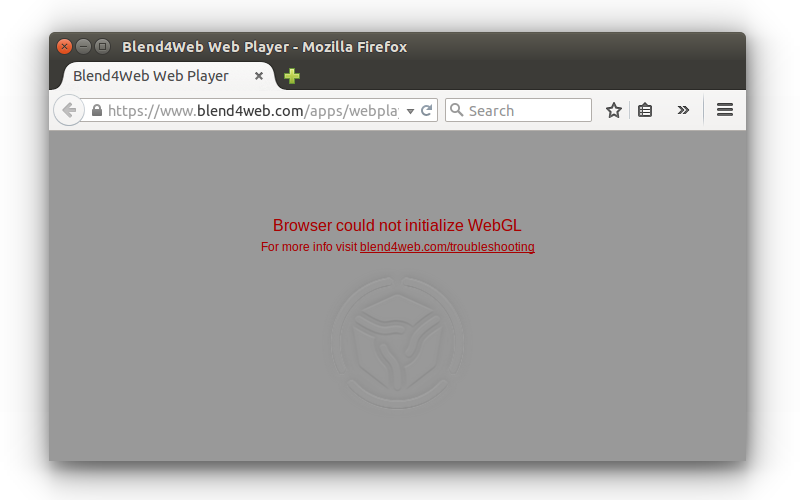
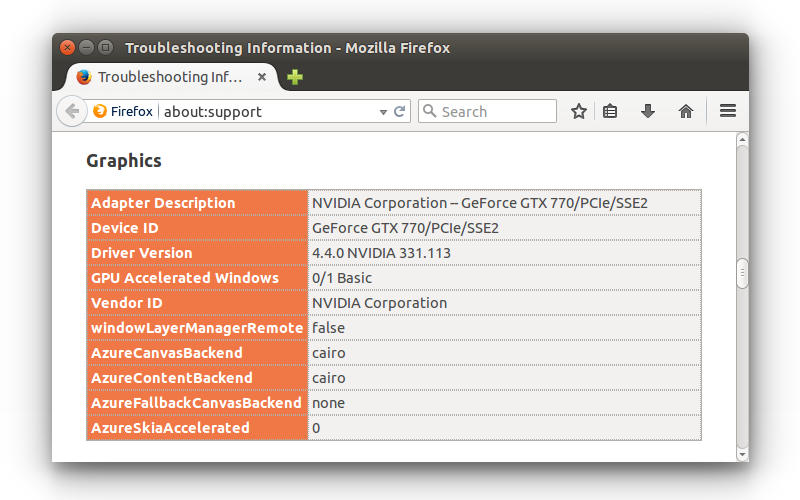
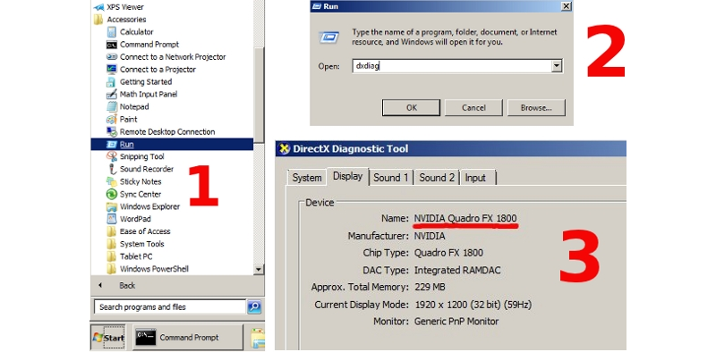

Проблемы и решения¶
Содержание
Проблемы при запуске движка¶
1. Появляется сообщение “Browser could not initialize WebGL.”
{kind=link}
Следует выполнить действия, описанные в разделе Ошибка инициализации WebGL.
2. Видны элементы интерфейса или пустой экран, но сцена не отображается. При этом тестовый сайт http://get.webgl.org/ и другие WebGL приложения работают корректно.
Вероятные причины:
Не используется локальный веб-сервер или браузер не настроен для работы с локальными ресурсами. См. раздел Загрузка локальных ресурсов.
Файлы ресурсов, которые пытается загрузить движок, были перемещены или удалены.
Используются старые версии драйверов.
Используются открытые драйвера, не обеспечивающие поддержку WebGL.
Для пользователей Linux - ввиду неполной реализации OpenGL стека в драйверах с открытым кодом в настоящий момент рекомендуется использовать проприетарные драйверы текущей версии для графических процессоров Nvidia и AMD.
Используется устаревшая операционная система, такая как Windows XP.
Ошибка инициализации WebGL¶
Сайт http://get.webgl.org/ при просмотре в браузерах Chrome или Firefox последней версии сообщает о проблемах. Что делать?
Установить доступные обновления для системы (для Windows см. инструкцию). В случае Windows установить последнюю версию DirectX. Перезагрузить систему.
Рекомендуется проводить своевременное обновление драйверов для графических карт. Чтобы определить тип и производителя карты, можно ввести about:gpu (или chrome://gpu) в адресную строку браузера Chrome...
{kind=link}
или Firefox...
{kind=link}
Для операционных систем семейства Windows можно воспользоваться средством диагностики DirectX dxdiag.
{kind=link}
Необходимо загрузить драйверы с соответствующего центра поддержки (например, Intel, Nvidia, AMD/ATI). После установки драйверов перезагрузить систему.
Если в результате вышеперечисленных действий инициализировать рендеринг не удается (или нет возможности обновить систему), можно попробовать изменить настройки браузера.
В Chrome:
Ввести about:flags (или chrome://flags) в адресную строку браузера, нажать Включить (Enable) под опцией Переопределение списка программного рендеринга (Override software rendering list) и перезапустить браузер.

В Firefox:
Ввести about:config в адресную строку браузера, найти параметр webgl.force-enabled и переключить его двойным щелчком мыши из false в true.
{kind=link}
Известные проблемы¶
Проблемы с обновлением старых версий аддона.
Рекомендуется перезагрузка Blender после обновления аддона.
Драйверы NVIDIA версии 331 в Linux могут приводить к программным ошибкам WebGL.
Изменение фильтрации текстур на некоторых устройствах.
При использовании iPad или браузера Internet Explorer отключена некорректная фильтрация текстур, которые используются материалами с типом прозрачности Alpha Clip.
Некоторые устройства, использующие GPU Mali, требуют принудительного включения WebGL в настройках браузера.
На системах Apple OS X и Blender 2.76 для работы локального сервера разработки может потребоваться установка Python 3.4. Это связано с ошибкой Blender https://developer.blender.org/T46623. В Blender 2.76b эта проблема устранена, поэтому рекомендуем обновиться.
При использовании драйверов Nouveau скелетная анимация может работать некорректно.
В браузерах IE11 и Microsoft Edge, а также на iPad могут некорректно рендериться текстуры с прозрачностью.
Проблема актуальна для прозрачных материалов. Артефакты заметны на тех участках, где значение альфа-канала равно нулю или отличается от него незначительно. Для исправления рекомендуется поднимать значение альфа-канала пока артефакты не исчезнут (как правило, бывает достаточно величин в диапазоне от 0.01 до 0.05).
Сбой работы WebGL в браузере Chromium под Linux на GPU Nvidia GeForce серий 400/500 с драйверами версии выше 355.
Проблема вызвана несовместимостью последних драйверов Nvidia с сэндбоксом Chromium. В качестве решения рекомендуется понизить версию драйверов до 340-х.